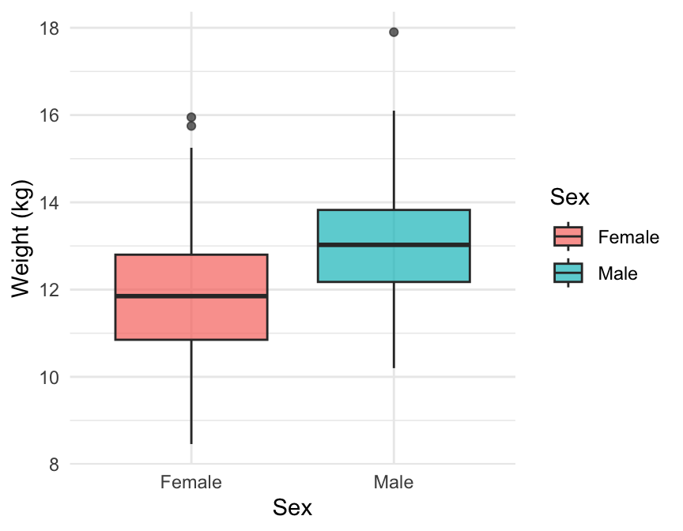
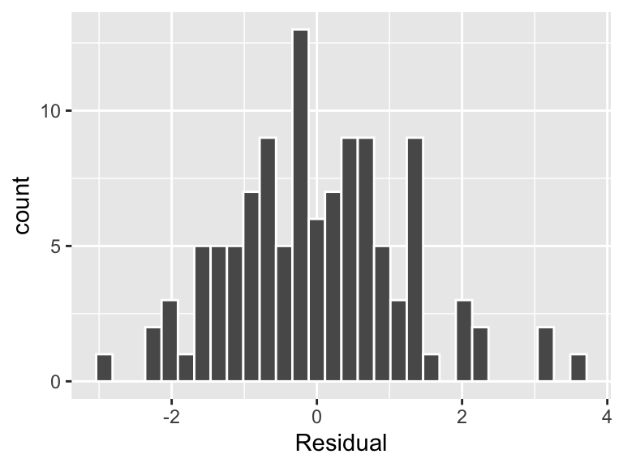

| Sex | Wt24 | Wt1 | Solids | ||||||
|---|---|---|---|---|---|---|---|---|---|
| Mean | Median | Std.Dev | Mean | Median | Std.Dev | Mean | Median | Std.Dev | |
| Male | 13.12 | 13.03 | 1.35 | 4.51 | 4.51 | 0.52 | 11.50 | 11.00 | 3.18 |
| Female | 11.94 | 11.85 | 1.59 | 4.11 | 4.08 | 0.55 | 11.43 | 12.00 | 2.91 |
Pro Skills Group Project
Introduction
Steadily increasing weight is an indicator of a healthy child. Weight change differs between children, so it is of interest to know what factors influence a child’s weight. A study conducted at the Queen Mothers hospital in Glasgow sampled 127 new born babies gathered the following variables:
Wt24 - The child’s weight at 24 months (numerical variable, continuous).
Wt1 - The child’s weight at 1 month (numerical variable, continuous).
Solids - The age at which the child was first introduced to solid food (numerical variable, discrete).
Sex - The child’s sex (categorical variable, with categories Male or Female).
The goal of this report is to examine which variables influence A child’s weight at 24 months first by assessing how well Wt24 can be predicted using a linear model with Wt1 as an explanatory variable. We then see if the model if improved by adding Sex or Solids to the model. Finally, we see if there is any evidence that the difference in weight (Wt24 - Wt1) is different for male and female children.
Section 2 consists of exploratory analysis explores the potential relationships between variables by use of data visualisation and numerical summaries. Section 3 uses linear regression modelling to answer the questions of interest. Section 6 summarisises the findings of the report as well as discuss some limitations of the study.
Exploratory Analysis
Figure 1 shows the relationship between the response Wt24 and explanatory variables, namely Wt1 and Solids. From Figure 1 (a) it appears that there is a positive, moderate to strong linear relationship between Wt24 and Wt1. Moreover, with the exception of a few points there appears to be a distinction by Sex with female children having lower weight and male children having a higher weight. Figure 1 (b) illustrates the relationship between Wt24 and Solids, with separate regression lines for males and females. The plot suggests a moderate negative linear relationship for females, indicating that introducing solids later may be associated with lower weight at 24 months. In contrast, the regression line for males remains relatively flat, suggesting a weak relationship between Wt24 and Solids for male children.

Figure 2 (a) presents a boxplot illustrating the distribution of Wt1 categorised by Sex. The plot suggests that male children tend to have a slightly higher median weight compared to females, with a slightly wider range of values. The presence of outliers, particularly among female infants, indicates some variation in early weight distribution. Figure 2 (b) extends this analysis to Wt24, where the observed trend continues. Male children exhibit a higher median weight than female children, and the overall distribution of weight is more spread out for males. The increased variation, particularly in the upper range, suggests that male children may experience a broader range of growth trajectories compared to females.
| term | Wt1 | Wt24 | Solids |
|---|---|---|---|
| Wt1 | 1.00 | 0.56 | −0.13 |
| Wt24 | 0.56 | 1.00 | −0.07 |
| Solids | −0.13 | −0.07 | 1.00 |
| term | Wt1 | Wt24 | Solids |
|---|---|---|---|
| Wt1 | 1.00 | 0.64 | −0.23 |
| Wt24 | 0.64 | 1.00 | −0.37 |
| Solids | −0.23 | −0.37 | 1.00 |
Table 1 shows the correlation between numerical variables for male and female children. For male children Table 1 (a) highlights that for male children Wt1 and Wt24 are moderately, positively correlated, whereas Solids against Wt24 and Wt1 are weakly negatively correlated. This is slightly different for female children as from Table 1 (b) there appears to be a higher positive correlation between Wt24 and Wt1. Additionally, there appears to be a moderate negative correlation between Solids and Wt24 for female children and a weak-moderate correlation between Solids and Wt1.
Table 2 shows the mean, median and standard deviation of Wt24, Wt1 and Solids by Sex. On average, there appears to be a slight difference in Wt24 and Wt1by Sex. There does not appear to be a difference in Solids by Sex on average.
Formal Analysis
Primary Model
To investigate how well weight at 24 months can be predicted using a linear model with weight at 1 month as the explantory variable, we begin by fitting the following regression model. This model can be written as:
\[\widehat{Wt24_i} = \hat{\alpha}+\hat{\beta}\ Wt1_i + \epsilon_i ~~~~~ \epsilon_i\sim N(0, \sigma^2)\]
Where \(Wt24_i\) is the weight of the \(i\)th baby at 24 months. \(Wt1_i\) is the weight of the \(i\)th baby at 1 month. \(\alpha\) is the intercept. That is, it is the predicted weight at 24 months when \(Wt1=0\), whilst biologically meaningless this parameter is necessary. \(\beta\) is the slope. That is, it is the average change in weight at 24 months for each additional kilogram increase in weight at 1 months. \(\epsilon_i\) is the error term for the \(i\)th baby and it is assumed to be normally distributed with mean 0 and variance \(\sigma^2\).
| term | estimate | p_value |
|---|---|---|
| intercept | 4.82 | 0.00 |
| Wt1 | 1.80 | 0.00 |
From Table 3 we see the coefficients for the model. We sub these values into our mathematical equation above to obtain the regression line below. All p-values appear to be close to zero, that is both coefficents are appear to be statistically significant.
\[\widehat{Wt24_i}=4.82+1.80Wt1_i+\epsilon_i\] That is, for every \(1\)kg increase in weight at 1 month, we would expect weight at 24 months would increase by 1.80kg. And, for a baby whose weight a 1 month is 0kg we would expect their weight at 24 months to be 4.82kg.
Figure 4 displays the residuals verses weight at 1 month (left) and the residuals versus fitted values (right). From these plots it is reasonable to assume that residuals have mean zero and constant variance as there does not appear to be any patterns such as fanning. There also appears to be the same number of observations both above and below the line. Although we do see some outliers, these do not appear to be influential.

Figure 5 allows us to check that the residuals are normally distributed. Although it is not a perfect bell curve, the residuals appear to follow a normal distribution centered at mean 0.
Secondary Models
To determine if the above model can be improved by adding the child’s sex and/or age at introduction to solids as further explanatory variables we begin by fitting the following model:
\[\widehat{Wt24_i} = \hat{\alpha} +\hat{\beta_1} Wt_i + \hat{\beta_2} Solids_i + \hat{\beta_3}\mathbb{I}_{male}+\epsilon_i ~~~~~ \epsilon_i\sim N(0, \sigma^2)\]
Where \(Wt24_i\) is the weight of the \(i\)th baby at 24 months. \(Wt1_i\) is the weight of the \(i\)th baby at 1 month. \(\alpha\) is the intercept. That is, it is the predicted weight at 24 months when \(Wt1=0\), whilst biologically meaningless this parameter is necessary. \(\beta_1\) is the slope of Wt1. \(\beta_2\) is the slope of \(Solids_i\) which is the age of weight the \(i\)th baby was introduced to solids and \(\mathbb{I}_{male}\) is an indicator variable that takes on the following values;
\[ I_{\text{male}} = \begin{cases} 1, & \text{if Sex = male} \\ 0, & \text{if Sex = female} \end{cases} \]
And \(\epsilon_i\) is the error term for the \(i\)th baby and it is assumed to be normally distributed with mean 0 and variance \(\sigma^2\).
| term | estimate | p_value |
|---|---|---|
| intercept | 5.23 | 0.00 |
| Wt1 | 1.63 | 0.00 |
| Sex: Male | 0.53 | 0.03 |
From Table 4 we the estimates for the regression model. We do not receive a coefficient for \(\beta_2\) due to the fact that when we fit the model we used Akaike Information Criterion (AIC) to carry out model comparisons. Through this model comparison method, we dropped \(Solids_i\) from the model. Additionally, from Table 4 we see that all p-values are close to zero so we conclude the three variables above are statistically significant. Given this information, we conclude the best model is as follows:
\[ \widehat{Wt24_i} = 5.23+1.63Wt1_i+0.53\mathbb{I}_{male}+\epsilon_i ~~~~~~~~~~ \epsilon_i\sim N(0, \sigma^2) \]
Figure 7 displays the residuals verses weight at 1 month split by sex (left) and the residuals versus fitted values split by sex (right). From these plots it is reasonable to assume that residuals have mean zero and constant variance as there does not appear to be any patterns such as fanning. There also appears to be the same number of observations both above and below the line. Although we do see some outliers for both sex, these do not appear to be influential.
Figure 8 allows us to check that the residuals are normally distributed for both male and female babies. Although it is neither is a perfect bell curve due to a few outliers, these outleirs do not appear to be influential and we conclude that the residuals appear to follow a normal distribution centered at mean 0.
We conclude it is reasonable to fit this linear regression model. Through AIC model comparision we determine that the best model does not include the variable \(Solids\). However, we must compare the above model with the model given in Section 4.
| AIC Comparison Table | |
|---|---|
| Model | AIC |
| Model with Wt1 and Sex | 40.50 |
| Model with Wt1 Only | 43.48 |
From Table 5 we see that the more favorable model is the model that includes both \(Wt1\) and \(Sex\) as predictor variables of \(Wt24\) due to the lower AIC value.
To determine if the change in weight from 1 month to 24 months is different for male and female babies we fit the following model:
\[Wt24_i-Wt1_i=\alpha +\beta\mathbb{I}_{male}+\epsilon_i ~~~~~~~~~~ \epsilon_i\sim N(0, \sigma^2)\]
Where \(Wt24_i-Wt1_i\) is the weight change between 24 months and 1 month for the \(i\)th baby, \(\mathbb{I}_{male}\) is an indicator variable that takes on the following values:
\[ I_{\text{male}} = \begin{cases} 1, & \text{if Sex = male} \\ 0, & \text{if Sex = female} \end{cases} \]
And \(\epsilon_i\) is the error term for the \(i\)th baby and it is assumed to be normally distributed with mean 0 and variance \(\sigma^2\).
| term | estimate | p_value |
|---|---|---|
| intercept | 7.82 | 0.00 |
| Sex: Male | 0.79 | 0.00 |
Since the coefficients displayed in Table 6 are all very close to 0, we conclude that they are all statistically significant and should be kept in the model. Therefore it is reasonable to assume that there is statistically significant evidence that change in weight from 1 month to 24 months is different for male and female babies.
Figure 9 displays the fitted values versus the residuals split by sex. From these plots it is reasonable to assume that residuals have mean zero and constant variance as there does not appear to be any patterns such as fanning. There also appears to be the same number of observations both above and below the line. Although we do see some outliers for both sex, these do not appear to be influential.

Figure 10 allows us to check that the residuals are normally distributed for both male and female babies. Although neither it is a perfect bell curve, the residuals appear to follow a normal distribution centered at mean 0 for both male and female babies.
Conclusion
In conclusions, based on our explanatory analysis in *** and formal analysis in Section 3 we believe that….
We also conclude that this model can be improved by adding the child’s sex however it is not improved by adding their age at introduction to solids. These comparisons and conclusions were done using Akaike Information Criterion as per Table 5. Additionally, we conclude that the change in weight from 1 month to 24 months is different for male and female babies due to the statistical significance of the coefficients seen in Table 6.
The limitations of the analysis carried about above is